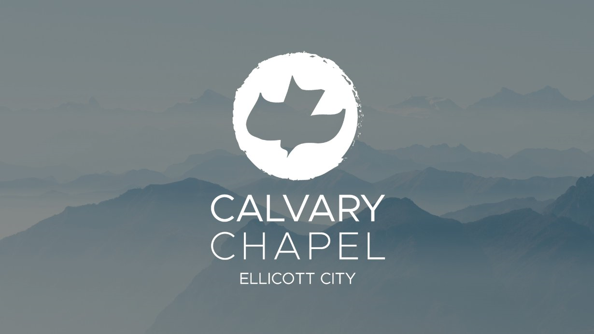
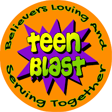
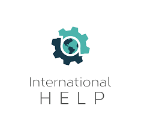
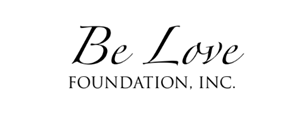

About Us
Operated by the Gorski Family Office, the Gorski Foundation is a Christian philanthropic organization dedicated to supporting evangelical domestic and international ministries that transform communities through faith, compassion, and tangible service.
Organizations We Support
- Calvary Chapel Ellicott City: Local church ministry and community outreach
- Iglesia Conexion al Reino: Supporting and uplifting immigrant communities
- Operation Mobilization International: Global missions and frontline evangelical work
- International Help: Overseas health education and vital medical resources
- Teen Blast: Urban youth transformation programs
- Mexico Broadcast Ministry: Widespread media outreach spreading the Gospel
- We are Kenya: Educational and community development in Kenya
- Be Love: Restoring dignity and empowering vulnerable women in Latin America
- Christcream: Meaningful community support and ministry



